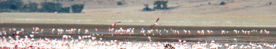
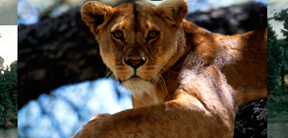
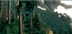

A1Q
 |
|
|
 |
|||
|  |
||||||
|  |
 |
|||||
|  |
||||||
 |
||||||
| |
||||||
 |
||||||
| |
||||||
| |
|
|
|
|
|
|
PhotoPoems
is a new artistic expression, intergrating poetry and photographic art.
The expression combines naturalist photos and metaphorical poems related to themes
of life and the environment....continued below....please scroll down to view thumbnails.....
 |
||||
| Botswana Blow-ups | Down on all Fours |
Botswana Blow-ups - Click here!
My travels and subsequent studies in Africa
reveal unique truths about the primoridal complex adaptive systems that exist there,and in many cases, only there...
As we know, in CAS the whole is always greater than the sum of the parts, or in discussions of ecologies, the environmental region is always greater than the sum of the elements that exist within it. The elements include all of life and land. The relationships and interaction of the various species not only to their "land environment' around them, but also to each other,and it evolves and emerges into a myriad of symbiotic inter-connections.
We must never forget that environments in Africa and the complex adaptive systems that exist there, in many cases, exhibit the same behaviors, the same migrations, the same predator-prey relationships, that have existed there since the time man first stood erect and walked. It is without question, that there are very few other places in the world that we can examine these primordial environments and the elements of their systems where such systems remain, for the most part, undisturbed.
Without question, the existence of the peoples, tribes, that have existed in these environments are critical elements and CAS that exist there. The question for example, "How long have the Masai lived in the area that ajoin and inter-connect with the Serengeti?" Is a question that takes us on a venture into history back before the majority of countries in the world were organized. Far, far, too often we take such primordial systems for granted.
I would ask the question, which I know would raise considerable debate, "How different would we be had we assimilated the different cultures of the American Indian into our our culture as an ingredient that we learned from, rather than reduced and dismantled? Would we be a culture, overall, that is better off in terms of not only our understanding of our natural environment, but also our relationship, as a culture, to our natural environment?" I might suggest, that when we dwell on this question, it becomes more than obvious, why we must do everything we can to preserve and maintain, these sacred, primordial environments in Africa, and South America as well.
These last vestiges of our primordial past, are histories, lessons, and understandings, of systems that we cannot, and must not, disregard, take for granted, or allow "progress" to dismantle and destroy. Currently, there is a move in Tanzania to build a paved road, highway, through the Serengeti, the very thought of this "progress" is not only a threat, but an act of lunacy when all the values of preserving and maintaining the region are considered. Join me in reacting to and protesting this insane consideration-what truly is progress? The preservation of this primordial region is more of a step of man as an intellectual being toward true progress than the idea of pavement through the Seregenti plains- Greg L. Bass-the ghostbear.
Please feel free to contact me at poetlor@aol.com or click this link to sign the petition
|
||||||||||||||||||||||||||||||||||||
Special: You can have the PhotoPoem"Princess of Samburu Nights"
beautifully framed with the Photo for $350 + shipping and handling.Buy Now

Greg's dairies in Kenya
Adventure photo's
and poetry combine to present stories of
African Safari's-Tanzania and Kenya-as well as excursions into Grizzly
Bear country,
and tales of romantic travels and trials in the wondrous Texas Hill Country.
PhotoPoems not only takes you around
the world, but also takes you inside the heart,
inside the thoughts, and inside
the secrets
of characters you may identify with and relate to.
PhotoPoems is an exploration
of beauty-and adventure to find truth.
The photo adventures as well as the poetry
are
available on CD.
You can experience the adventure of Africa, British Columbia, and even
capture a disc of Lighthouses or Waterfalls. PhotoPoems let's you discover a part of
yourself in each adventure. If you'd like a CD of the photo's, the poetry, and
Greg's readings
you can order the entire experience as well. Welcome to PHOTOPOEMS-
Thank you from-The Ghostbear*!!!
*Ghostbears are otherwise known as Spirit Bears and can be found in British Columbia, they are a very
rare species of black bear that has mutated to white. Ghostbear is also the name used
for Shamans who were the historians and story tellers among the "People" or Lakota Sioux.
Website Copyright Alannah K Ashlie 2005-2010
The strange and beautiful thing about now is that it never leaves you and it doesn't change,
the field of now. Because the essence of now is the unconditioned consciousness, the field in which all phenomena happen.
Quote from Eckhart Tolle